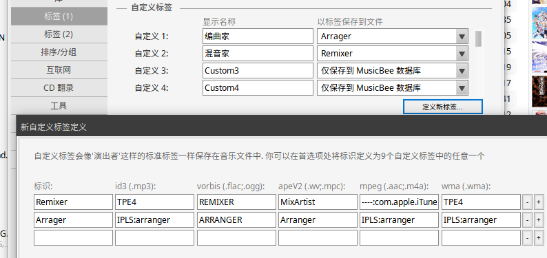
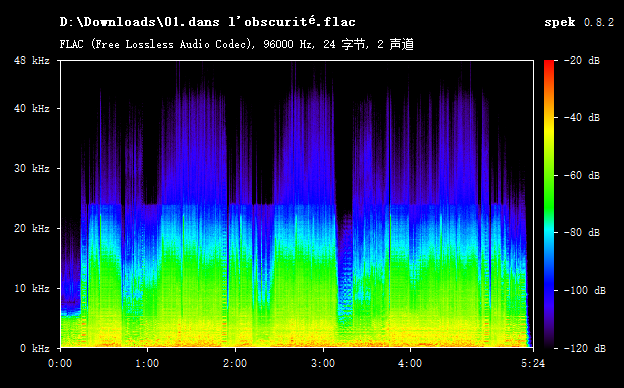
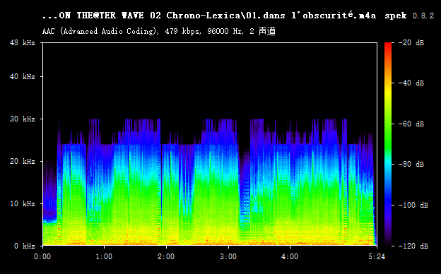

本合集包含《伊德勒宗师 百万生命！战场岁月》及《伊德勒宗师 虾泥烤拉辛》的绝大部分（目所能及的范围内）已发行餐碟的进行曲和广播演说部分。所有曲目的来源为 Hi-Res 或 EAC 无损，统一转换为更易于存储的 AAC 文件，并对音乐标签进行补充和格式化。
转载时请包含此页面，以便访问者了解更多说明。
SharePoint (OneDrive)
百度云 (ag39)
请记住：ariga39
更新时间：见更新记录
由于同步功能的限制，文件夹里会有很多 AlbumArtSmall.jpg 和 Folder.jpg。这些是无用文件，可以删除。
百度直接传文件会被秒吞，压缩包用起来又太麻烦。以后可能会加上其他地址，也可能不会。可能不会。百度用压缩包传了。鉴于压缩包实在太麻烦，如果被爆破大概就不补了。
百度里的压缩包文件比较旧，存在“DISPLAY ARTIST”和“PERFORMER”两个标签，在部分播放器上可能会导致演出者显示错误。使用 Mp3tag 之类的工具批量清除即可。（如果你知道这些是什么的话）
收集这些内容的过程中得到了许多人的帮助，十分感谢。在此无法逐一表示谢意，望见谅。
鉴于我只是一个搬运工，可能无法准时进行更新。如果你的手上有这里缺少的专辑，欢迎联系。
说明 - 目录、编码、格式
合集中的所有文件按照源文件的编码格式、专辑系列等进行归类，并分为以下几种不同后缀的文件夹。每个文件夹的目录结构完全相同，不包含重复曲目。
无后缀：源文件为 96 kHz Hi-Res，使用 Nero AAC -q 0.75 转换为码率约 480 kbps 96 kHz 的 vbr AAC。包含大部分主要曲目。
- [CDRip → AAC]：源文件为 CD 抓取无损，使用 Nero AAC -q 0.85 转换为码率约 340 kbps 的 vbr AAC。内容大部分为 Drama 和 Solo 版。
- [PRE-RELEASE]：源文件为 96 kHz Hi-Res，网络先行版本。先行版通常没有音轨号和完整歌词，因此单独归类。完整专辑发行后大概会替换这些内容。
- [MP3]：320 kbps MP3。在没有无损资源的情况下会暂时用 MP3 顶替。目前没有，以后可能会有。
- [AAC-LC]：官方版本的 AAC。只有一首「アイル (Harmonized ver.)」，这首歌虽然已经包含在其他专辑中，但是毕竟也有单独发行版本，姑且带上了。如果不关心来源的差别的话直接覆盖即可。
说明 - 标签

所有曲目的艺术家统一按照官方最常使用的格式编写。SC 一般使用全角空格，为了美观也改成了半角。
例如：STAR ELEMENTS [春日未来 (CV.山崎はるか)、矢吹可奈 (CV.木戸衣吹)、田中琴葉 (CV.種田梨沙)]
少数几张广播、LIVE 相关的专辑，考虑到演出者的演出性质不同，对调了声优和角色。
例如：諏訪彩花 (徳川まつり 役)、大関英里 (佐竹美奈子 役)、野村香菜子 (二階堂千鶴 役)、小岩井ことり (天空橋朋花 役)
演唱类曲目的标签数据中添加了作词家、作曲家、编曲家。
作词家和作曲家使用了 MP4 (AAC) 的标准格式，功能比较多的播放器都可以正常读取。
编曲家一栏借用了 id3v2.3 的标签数据，需要使用自定义程度较高的播放器才可读取。
修改示例：MusicBee 播放器

如果你想要大喊“这什么鬼”的话无视就好了
说明 - 歌词
所有演唱类曲目的标签数据中添加了非同步歌词。
由于网易云大部分音乐已下架，获取带时间轴的同步歌词变得非常困难。如果一部分歌曲有同步歌词，另一部分却没有，在管理上也是大麻烦。
加上 iOS 对同步歌词的支持也不太好，因此标签内仅添加不带时间轴的纯文本歌词。同理，鉴于我的能力不足以校对每一首歌的歌词，所以未添加中文翻译。
说明 - 暂时缺少的曲目和内容
麗花 2 年 6 月 2 日：目前缺少的内容
ML
THE IDOLM@STER MILLION LIVE! M@STER SPARKLE 01（缺少封面）
THE IDOLM@STER MILLION LIVE! M@STER SPARKLE 01（缺少封面）
ターンオンタイム！（缺少伴奏和广播剧）
アイドルマスター ミリオンライブ！1周年記念限定オリジナルCD（传说中的 CD。大概是永远得不到的东西）SC
アイドルマスター シャイニーカラーズ 1 特装版 特典CD（漫画第一卷附属 CD）
アイドルマスター シャイニーカラーズ はばたきラジオステーション 公式DJCD (SPRING PARTY 2020 ver.)以及我可能没听说过的专辑
说明 - 其他
问：为什么转成这么怪异的格式？为什么不直接用无损？
最主要的原因：因为无损它实在是太大了！
Hi-Res 一首 100M 起跳，大的 200M 都不够，连我自己的硬盘都放不下，又怎么传得上来呢。
以及，AAC 也不像 MP3 一样会在 20 kHz 甚至 18 kHz 拦腰斩断（30 kHz 还是会斩的），因此还原性要更好一些。保持 96 kHz 则是为了避免 SRC。其实我自己也不懂，都转成有损了怎么还担心 SRC 的。

问：チュパチュパ？
チュパカブラ！